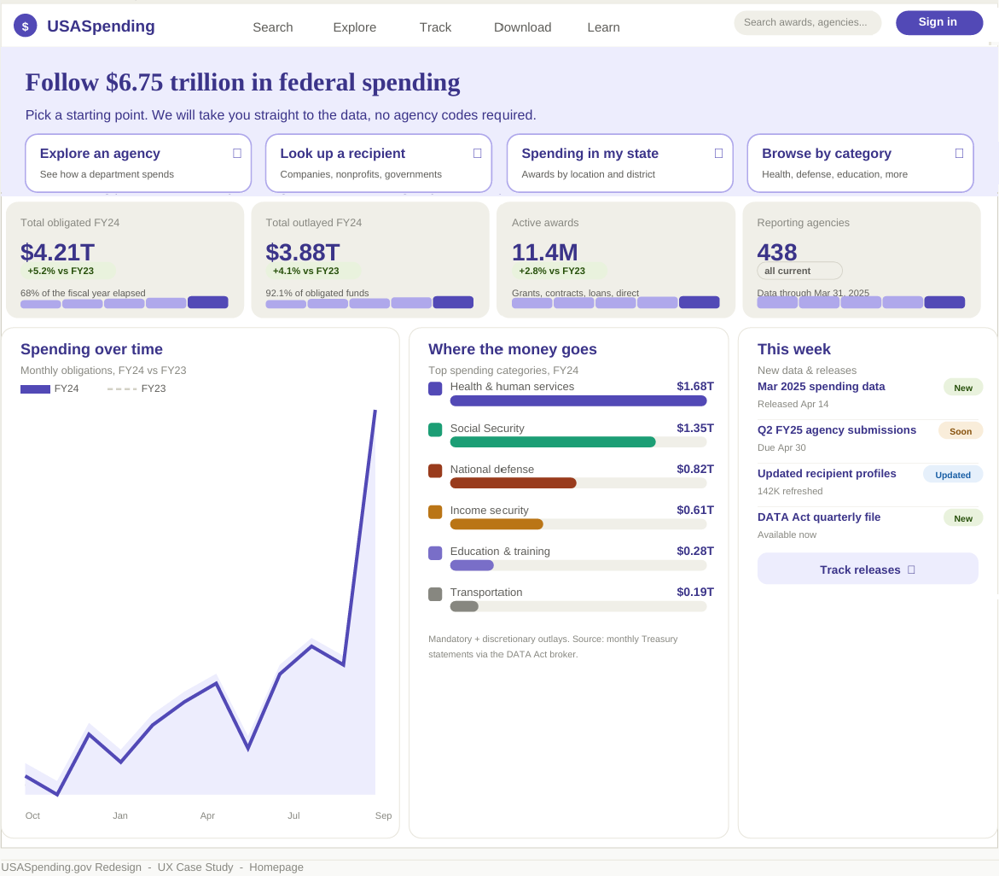

Federal spending transparency · concept study
USASpending.gov
Trillions of dollars of public spending, technically open but practically unreadable. I reframed the platform around the questions real people bring to it (where did the money go, and who decided) instead of the database it sits on top of.

Problem
Open data, closed understanding. Powerful for analysts, opaque for the journalists, grant-seekers, and citizens it is meant to serve.
Approach
Heuristic audit, task-based personas, and an IA rebuilt around guided exploration rather than raw query-building.
Design
High-fidelity flows that lead with plain-language narratives and progressive disclosure into the underlying detail.
Takeaway
Transparency is an interaction problem, not a data problem. Access only counts when comprehension follows.
MethodsHeuristic audit · Personas · Information architecture · Hi-fi prototyping · Data UX
Read the case study overview →